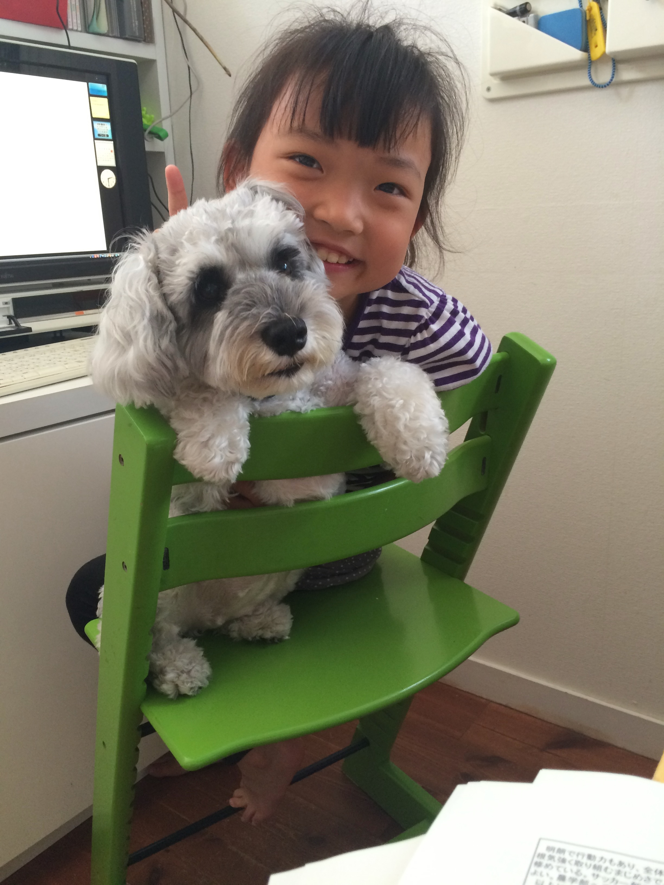
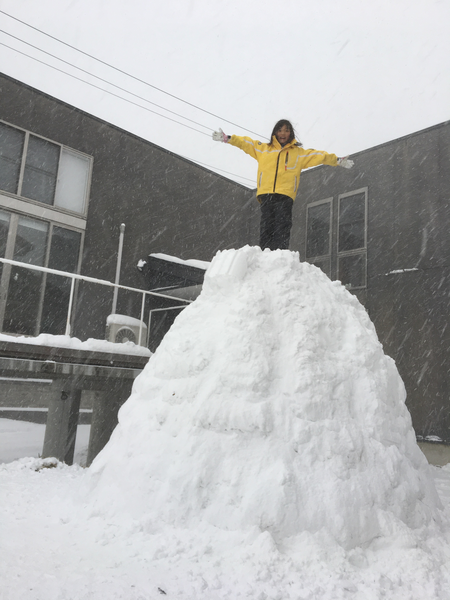
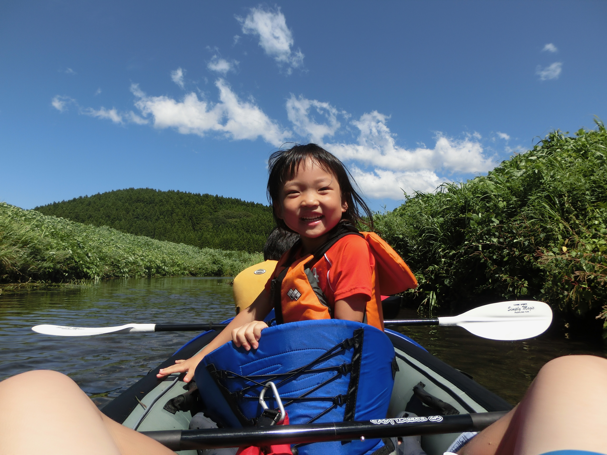
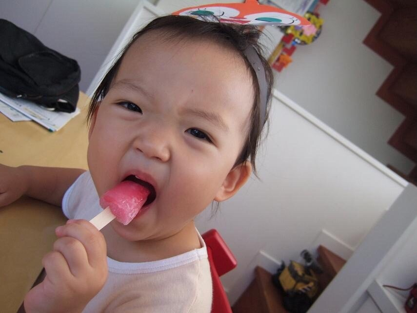

Profile
2007年山形県酒田市生まれ。
犬が大好きで、毎日のようにダンボールで愛犬の家を工作し没頭。
中学校では生徒会長を務め、モノや体験で関係性をつくれることに気づき、 モノづくり/体験設計に興味を持ち始める。
2023年4月に神山まるごと高専へ入学し、 現在も徳島県神山町で寮生活を送っている。
イベント企画から始まり、広報、展示体制の構築、プロジェクトマネージャーなど、 多角的なアプローチで関係性のデザインに取り組んできました。





モノをつくること、
関係性をデザインすること。
私は今まで、目の前に届ける相手がいるモノづくりに没頭してきました。
「あのこが楽しそうに笑ってくれたらいいな」
「これをつくったら家族が喜びそうだな」
相手を思い浮かべながらつくる時間が、私にとっての原動力でした。
モノは形だけでなく、人と人をつなぎ、
その先の関係性までもつくるきっかけになるものだと思っています。
だから私は、
使う人の気持ちに寄り添うモノをつくること。
誰かの背中を押せるきっかけになるようなデザインをすることを大切にしています。
Values
共感
相手の立場に立って考え、想いを受け取ることからすべてが始まる。デザインはまず、人を知ることからだと考えています。
実行
考えるだけで終わらせず、手を動かして形にする。小さくても、現実を一歩動かすことを大切にしています。
結ぶ
人と人、想いと想いをつなぎ、新しい関係性を生み出す。その"間"をデザインすることが私のやりたいことです。
Tools
日常的に使用しているツールです。プロフェッショナルの方々ほど使いこなせているわけではありませんが、 制作や課題の中で基本的な機能は一通り扱い、アイデアを形にするためや仲間と一緒に進めていくためのツールとして活用しています。